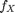
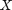
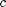
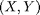
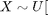
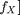
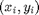
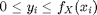

The Accept-Reject Method: Anthony Gusman, Nicholas Sullivan
Contents
Introduction
The process of generating pseudo random numbers using a given density function of a random variable is easy if the inverse of the CDF is known or quick to find. However, the general method breaks down when there does not exist a happy way to find the inverse of the CDF. This is why we will be exploring something called the Acceptance-Rejection Method.
Overview of Method
The Acceptance-Rejection Method is actually quite simple. We implement the method with our acceptReject function as described in plain English below:
- Given a probability density function (PDF)  of a random variable  with compact support find its maximum over its range (call it ).
- Generate a pair of random numbers  such that  support of  and
![$Y \sim U[0,c]$](acceptrejectpaper_eq76146.png) .
. - For each point  if  then it is "accepted" otherwise it is "rejected."
As you can see this is essentially the same process used in Monte-Carlo integration.
The Functions
We provide two functions in this paper, acceptReject.m and acceptRejectPlot.m with the following outputs and arguments:
[X,Y] = acceptReject(f,a,b,n)
- Output: [X,Y], random numbers defined as above each split into a cell with the first row as the accepted values and the second row as the rejected values
- Input: f, PDF function
- a, lower bound of f's domain
- b, upper bound of f's domain
- n, number of pairs (increase this for higher accuracy)
acceptRejectPlot(fun,a,b,X,Y)
- Output: plots, one of the pdf with a histogram of the accepted values generated and one of the pdf along with accepted and rejected points.
- Input: fun, PDF function
- a, lower bound of fun's domain
- b, upper bound of fun's domain
- X, the X returned by acceptReject
- Y, the Y returned by acceptReject
Accept Reject and Plotter function code
here is the full code of both functions with comments and syntax high lighting:
acceptReject.m
include>acceptReject.m</include
acceptRejectPlot.m
include>acceptRejectPlot.m</include
Examples
Lets do the beta and someother unhappy distribution